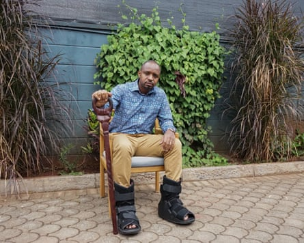
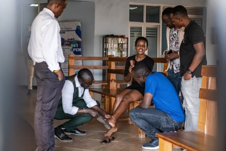
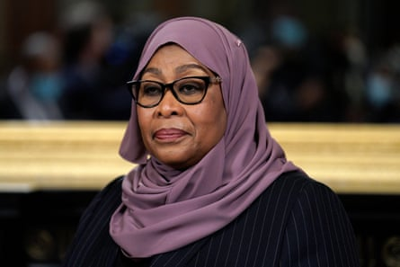

Two east African activists say they plan to sue Tanzania’s government for illegal detention and torture over their treatment during a visit in support of an opposition politician in May.
Boniface Mwangi, from Kenya, and Agather Atuhaire, a Ugandan, sent shock waves around the region earlier this month when they gave an emotional press conference in which they alleged they had been sexually assaulted and, in Atuhaire’s case, smeared in excrement after their detention in Dar es Salaam. “[The authorities] take you through sexual torture,” Mwangi said at the time.
Even in a region accustomed to recurrent rights abuses, the apparent targeting of foreigners by the Tanzanian authorities marked a new and worrying turn in a crackdown on critics and opponents of the president, Samia Suluhu Hassan.
In interviews with the Guardian, Mwangi and Atuhaire said they planned to initiate cases in a Tanzanian court as well as through regional and international avenues, including the east African court of justice and the African court on human and peoples’ rights.
Boniface Mwangi in Nairobi on 12 June. He uses a walking a stick and wears foot braces as he recovers from injuries he says he sustained in Tanzania.Photograph: Carlos Mureithi/The Guardian
“We’re not going to let them get away with this,” said Mwangi, a well-known Kenyan photojournalist and activist. Atuhaire, a lawyer, journalist and critic of the government of the Ugandan president, Yoweri Museveni, said: “We need to hold these guys accountable to know that they cannot violate people unprovoked like that.”
Mwangi and Atuhaire, who had travelled to Tanzania to attend a court hearing for a treason case against the opposition politician Tundu Lissu on 19 May, say they were taken from their hotel by people they described as security officials, illegally detained and verbally and physically abused.
Mwangi said his beating started at an immigration office that afternoon when a security official slapped and punched him repeatedly in the presence of Atuhaire and three lawyers. He said he was assaulted again at a police station, where security personnel accused the activists of having travelled to Tanzania to disrupt peace and ruin the country.
“The real torture,” Mwangi said, happened that evening when a group of about seven men – whom he described as having bloodshot eyes and smelling of alcohol – and a woman handcuffed and blindfolded him and Atuhaire and drove them to a compound.
Both activists said that at the compound they were ordered to strip and were suspended upside down then hit with wooden planks on their soles. They said their attackers stifled their screams by stuffing Mwangi’s underwear into his mouth and putting some cloth in Atuhaire’s mouth.
The activists said their attackers inserted what seemed to be their hands or other objects into their rectums and smeared excrement on Atuhaire’s body, then photographed them and told them not to reveal what had happened. Two days later they were dumped at their countries’ borders.
Agather Atuhaire shows some of her bruises and scars to colleagues at a hospital in the Ugandan capital, Kampala, on 23 May.Photograph: AFP/Getty Images
“I didn’t see us coming out of there alive,” said Atuhaire. “It was really, really painful.”
Mwangi said: “Nothing in my mind or in my life prepared me for this. I’ve been injured before, I’ve been beaten before, I’ve been shot before. My house has been bombed. I’ve seen all kind of extremities and cruelties, but I’ve never felt such kind of pain.”
The Guardian has approached a Tanzanian police spokesperson for comment. Last week Tanzania’s representative to the UN, Abdallah Possi, told a meeting of the UN Human Rights Council in Geneva: “Although these claims against the government are highly doubtful, we take the allegations of torture, sexual abuse and malpractices very seriously. That is why the government is currently investigating and, if established, those concerned will be held accountable.”
A series of killings, kidnappings, arrests and tortures over the past year have prompted widespread condemnation locally and internationally. Among those killed was Mohamed Ali Kibao, a member of the secretariat of the main opposition party Chadema, who was found beaten and with his face doused with acid in September.
In April, Father Charles Kitima, a Catholic priest who is vocal on democratic reforms and rights issues, was brutally attacked near his residence. Earlier this month, the government deregistered a church belonging to Josephat Gwajima, a politician from the ruling party, after he called out illegal detentions and enforced disappearances and announced a prayer campaign to seek divine intervention for Hassan and other national leaders. And last week two men who posted talkshows about democracy and governance on YouTube were arrested for “improper use of social media”.
There is no evidence of Hassan’s personal involvement in the incidents, many of which the government has condemned. Nevertheless, opposition politicians and rights campaigners say her administration is overseeing a return to the fear-based tactics of her predecessor, John Magufuli . Earlier this month she warned activists from neighbouring countries against “trying to destabilise” Tanzania.
Maria Sarungi Tsehai, a Tanzanian rights activist, described the targeting of non-Tanzanians as unprecedented and a “sign of huge panic” on the part of the Hassan administration in the run-up to her first presidential electoral test.
“What we’re seeing is a very insecure presidential candidate,” said Tsehai, who lives in self-exile in Nairobi. “She has to lean more heavily on that security apparatus. And she has decided that she doesn’t want to have any free or fair election. She just wants to get her second term. And that decision comes at a very heavy price.”
Last year, Tsehai was abducted from the streets of the Kenyan capital by armed men and feared she would become the latest victim of a spate of enforced deportations from Kenya. However, she was released a short time later without crossing the border after news of her kidnapping spread quickly on social media.
Samia Suluhu Hassan will face her first presidential election in October after taking over from John Magufuli.Photograph: Abaca Press/Alamy
In the months after Hassan took office following Magufuli’s death in 2021, the president gained domestic and international approval for reconciling with the opposition and reversing some of Magufuli’s repressive policies. But since then a wave of repression has wiped out hopes of lasting reform.
Hassan’s CCM party has ruled the country since independence. The opposition and civil society have long called for reform of the constitution, which critics say grants the president and the ruling party excessive powers.
Earlier this year, Lissu was arrested and charged with treason and cybercrime offences, and his Chadema party – which had called for a boycott of this year’s elections unless electoral reforms were enacted – was disqualified from participating.
Mwangi said CCM was acting for self-preservation. “What Suluhu is trying to do is win an election by any means necessary,” he said. “She’s reading from a dictator’s manual [that says] ‘brutalise and beat people into submission’.”
Atuhaire – whose work in exposing corruption won her an international women of courage award from the US last year – said her and Mwangi’s experience showed the “level of impunity” in Tanzania.
The activists are still nursing injuries on their feet and other parts of their bodies, in addition to having psychological trauma. They said they had decided to speak about their alleged abuse to shine a light on the plight of Tanzanians who had gone through similar experiences.
“There’s no level of shame or stigma that is more important than pursuing justice,” Atuhaire said. “Justice is the driving factor – these people must be held accountable for what they did to us, for what they have done to Tanzanians.”